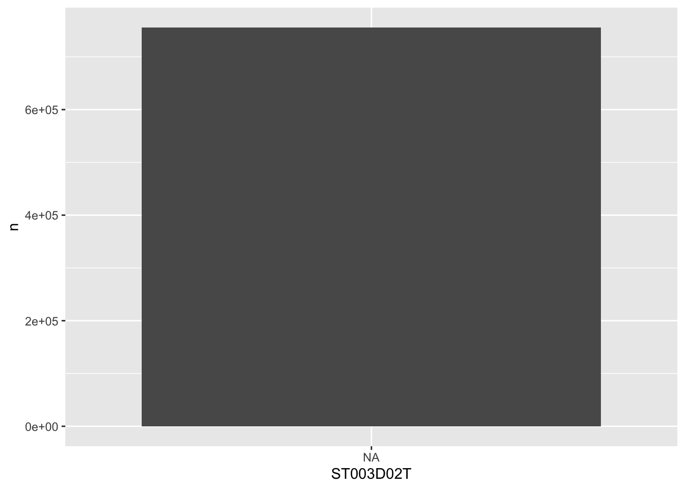

Loading packages and exploring data
1 Exploring data
Now that we have loaded the PISA_2025 data set we can start to explore it.
You can check that the tables have loaded correctly by typing the object name and running the line (control|command ⌘ and Enter)
We can see from this that the tibble (another word for dataframe, basically a spreadsheet table) is 755721 rows, with 80 columns 1. This is data for all the students from around the world that took part in PISA 2022. The actual PISA dataset has many more columns than this, but for the examples here we have selected 80 of the more interesting data variables. The column names might seem rather confusing and you might want to refer to the PISA 2025 code book to find out what everything means.
The data shown in the console window is only the top few rows and first few columns. To see the whole table click on the Environment panel and the table icon  to explore the table:
to explore the table:

Alternatively, you can also hold down command ⌘|control and click on the table name in your R Script to view the table. You can also type View(<table_name>). Note: this has a capital “V”
In the table view mode you can read the label attached to each column, this will give you more detail about what the column stores. If you hover over columns it will display the label:

Alternatively, to read the full label of a column, the following code can be used:
[1] "To what extent do you agree or disagree with the following statements? - School has been a waste of time"Each view only shows you 50 columns, to see more use the navigation panel:

Note
To learn more about loading data from in other formats, e.g. SPSS and STATA, look at the tidyverse documentation for haven.
The PISA_2025 dataframe is made up of multiple columns, with each column acting like a vector, which means each column stores values of only one datatype. If we look at the first four columns of the schools table, you can see the CNTSTUID, ESCS and PV1MATH columns are <dbl> (numeric) and the other three columns are of <fctr> (factor), a special datatype in R that helps store categorical and ordinal variables, see the section on factors. for more information on how factors work.
Note
Vectors are data structures that bring together one or more data elements of the same datatype. E.g. we might have a numeric vector recording the grades of a class, or a character vector storing the gender of a set of students. To define a vector we use c(item, item, ...), where c stands for combine. Vectors are very important to R, even declaring a single object, x <- 6, is creating a vector of size one. To find out more about vectors see: the section on vectors.
We can find out some general information about the table we have loaded. nrow and ncol tell you about the dimensions of the table
[1] 755721[1] 80If we want to know the names of the columns we can use the names() command that returns a vector. This can be a little confusing as it’ll return the names used in the dataframe, which can be hard to interpret, e.g. ST004D01T is PISA’s way of encoding gender. You might find the labels in the view of the table available through View(PISA_2025) (note: the capital V in View) and the Environment panel easier to navigate:
[1] "CNT" "CNTSCHID" "CNTSTUID" "REGION" "OECD"
[6] "LANGTEST_QQQ" "ST003D02T" "ST003D03T" "ST004D01T" "ST250Q01JA"
[11] "ST250Q02JA" "ST250Q03JA" "ST250Q04JA" "ST250Q05JA" "ST251Q01JA"
[16] "ST251Q06JA" "ST254Q01JA" "ST254Q02JA" "ST254Q03JA" "ST254Q04JA"
[21] "ST254Q05JA" "ST255Q01JA" "ST488Q01DA" "ST488Q02DA" "ST488Q08DA"
[26] "ST488Q09DA" "ST401Q05DA" "ST403Q01DA" "ST125Q01NA" "ST127Q02TA"
[31] "ST062Q03TA" "ST034Q01TA" "ST038Q08NA" "ST265Q01JA" "ST495Q03DA"
[36] "ST324Q11JA" "ST016Q01NA" "ST493Q01DA" "ST420Q01DA" "ST420Q02DA"
[ reached 'max' / getOption("max.print") -- omitted 40 entries ]As mentioned, the columns in the tables are very much like a collection of vectors, to access these columns we can put a $ [dollar sign] after the name of a table. This allows us to see all the columns that table has, using the up and down arrows to select, press the Tab key to complete:

[1] Never or almost never Never or almost never Never or almost never
[4] Never or almost never A few times a year Never or almost never
[7] <NA> Never or almost never Never or almost never
[10] Never or almost never Never or almost never Never or almost never
[13] Never or almost never Never or almost never A few times a year
[16] Never or almost never Never or almost never A few times a year
[19] Never or almost never Once a week or more A few times a year
[22] Never or almost never Never or almost never Never or almost never
[25] Never or almost never A few times a year Never or almost never
[28] Never or almost never Never or almost never Never or almost never
[31] Never or almost never <NA> Never or almost never
[34] A few times a year Never or almost never A few times a year
[37] Never or almost never Never or almost never Never or almost never
[40] Never or almost never
[ reached 'max' / getOption("max.print") -- omitted 755681 entries ]
attr(,"label")
[1] During the past 12 months, how often have you had the following experiences in school? - Other students spread nasty rumours about me.
9 Levels: Never or almost never A few times a year ... no responseWe can apply functions to the returned column/vector, for example: sum, mean, median, max, min, sd, round, unique, summary, length. To find all the different/unique values contained in a column we can write:
[1] Albania Azerbaijan Argentina
[4] Australia Austria Armenia
[7] Belgium Brazil Brunei Darussalam
[10] Bulgaria Cambodia Canada
[13] Chile B-S-J-Z (China) Chinese Taipei
[16] Colombia Costa Rica Croatia
[19] Czechia Denmark Dominican Republic
[22] Ecuador El Salvador Estonia
[25] Finland France Georgia
[28] Palestinian Authority Germany Greece
[31] Guatemala Hong Kong (China) Hungary
[34] Iceland Indonesia Kurdistan Region (Iraq)
[37] Ireland Israel Italy
[40] Kosovo
[ reached 'max' / getOption("max.print") -- omitted 50 entries ]
90 Levels: Albania United Arab Emirates Argentina Armenia Australia ... ZambiaWe can also combine commands, with length(<vector>) telling you how many items are in the unique(PISA_2025$CNT) command
You might meet errors when you try and run some of the commands because a field has missing data, recorded as NA. In the case below it doesn’t know what to do with the NA values in ESCS, so it gives up and returns NA:
You can see one of the NAs by just looking at this column:
[1] -1.10067437 -1.93078658 -1.07851752 -0.01820368 -1.07164800 -0.08558142
[7] NA -1.23616657 -2.17680732 -0.73564282 -0.19181851 NA
[13] -0.66559248 -0.28831090 -0.96546262 -1.56388531 0.33290502 NA
[19] -1.33835089 -1.02455873 -1.19486942 -0.46564672 NA -1.37449057
[25] NA NA -0.97866627 NA -0.88738920 0.04735698
[31] -2.95360507 NA -1.14540715 -1.57288053 -1.03452546 -1.58126680
[37] -1.62822217 -1.42874253 -2.24658361 -1.53846385
[ reached 'max' / getOption("max.print") -- omitted 755681 entries ]
attr(,"label")
[1] "Economic, Social and Cultural Status Index"To get around this you can tell R to remove the NA values when performing maths calculations:
Tip
R’s inbuilt mode function doesn’t calculate the mathematical mode, instead it tells you what type of data you are dealing with. You can work out the mode of data by using the modeest package:
There is more discussion on how to use modes in R here
Calculations might also be upset when you try to perform maths on a column that you think is a number but is actually stored as another datatype. For example if you wanted to work out the mean number of “How many [digital devices] with screens are there in your [home]?” - ST253Q01JA:
Looking at the structure of this column, we can see it is stored as a factor, not as a numeric. Factors are a special datatype that use numbers to link to categorical values. For ST253Q01JA there are 12 different levels that you can explore using the str() and levels() commands:
Factor w/ 13 levels "There are no <digital devices> with screens",..: NA NA NA NA NA NA NA NA NA NA ...
- attr(*, "label")= chr "How many <digital devices> with screens are there in your <home>?" [1] "There are no <digital devices> with screens"
[2] "One"
[3] "Two"
[4] "Three"
[5] "Four"
[6] "Five"
[7] "6 to 10"
[8] "More than 10"
[9] "valid skip (filter rule)"
[10] "system missing"
[11] "not administered/not applicable"
[12] "invalid"
[13] "no response" You can change the type of the column to make it work with the mean command, changing the column to as.numeric(<column>) for the calculation:
[1] 6.458576This is far from ideal as we are now treating a categorical field as a numeric! Looking at the coding for the numbers in the field and the corresponding levels, we see that 1 is actually no digital devices. For more details on datatypes, see the section on datatypes. .
[1] "1 : There are no <digital devices> with screens"
[2] "2 : One"
[3] "3 : Two"
[4] "4 : Three"
[5] "5 : Four"
[6] "6 : Five"
[7] "7 : 6 to 10"
[8] "8 : More than 10"
[9] "9 : valid skip (filter rule)"
[10] "10 : system missing"
[11] "11 : not administered/not applicable"
[12] "12 : invalid"
[13] "13 : no response"
Tip
To get a good overview of what a table contains, you can use the str(<table_name>) and summary(<table_name>) commands.
1.1 Questions
Using the PISA_2025 dataset:
- Use the Environment window to view the dataset, what is the name and the label of the 26th column?
answer
# TODO
# the 26th column is ST005Q01JA
#"What is the [highest level of schooling] completed by your mother?"
# you could use View() instead of the environment window, note the capital V
View(PISA_2025)
# use could use the vector subset to fetch the 100th name
names(PISA_2025)[26]
# [1] "ST005Q01JA"
# you could use the attr function to find the label
# attr(PISA_2025$, "label")
# or using the dollar sign to load this field will also give the label
# PISA_2025$ST005Q01JA
attr(PISA_2025$ST005Q01JA, "label")
# "What is the [highest level of schooling] completed by your mother?"
# or using the dollar sign to load this field will also give the label
# PISA_2025$ST005Q01JA- Use the dollar sign
$to return the columnST004D01T. What is stored in this column?
answer
# Student (Standardized) Gender
PISA_2025$ST004D01T
# [1] Male Female Female Female Female Male Male Male Male Male Male Male Female Female
# [15] Male Male Female Female Male Female Female Male Male Male Male Male Female Male
# [29] Male Male Male Male Male Female Female Male Male Male Female Female
# [ reached 'max' / getOption("max.print") -- omitted 755681 entries ]
# attr(,"label")
# [1] Students' gender from sampling data (Female/Male)
# 7 Levels: Female Male valid skip (filter rule) system missing ... no response- How many students results are in the whole table?
- What
uniquevalues does the dataset hold for expected occupationOCOD3item? How many levels are there?
answer
unique(PISA_2025$OCOD3)
unique(PISA_2025$OCOD1)
unique(PISA_2025$OCOD2)
# you can read the length from the above, or you could use the
# length command to tell you the length of the vector
length(unique(PISA_2025$OCOD3))
# [1] 583
length(unique(PISA_2025$OCOD1))
# [1] 590
length(unique(PISA_2025$OCOD2))
# [1] 590
setdiff(unique(PISA_2025$OCOD1),
unique(PISA_2025$OCOD2))
# character(0)- What are the
maximum,mean,medianandminumum science gradesPV1SCIEachieved by any student
- Explore the dataset and makes notes about the range of values of 2 other columns
1.2 “Piping and dplyr”
Piping allows us to break down complex tasks into manageable chunks that can be written and tested one after another. There are several powerful commands in the tidyverse as part of the dplyr package that can help us group, filter, select, mutate and summarise datasets. With this small set of commands we can use piping to convert massive datasets into simple and useful results.
Using the pipe %>% command, we can feed the results from one command into the next command making for reusable and easy to read code.

Note
The pipe command we are using %>% is from the magrittr package which is installed alongside the tidyverse. Recently R introduced another pipe |> which offers very similar functionality and tutorials online might use either. The examples below use the %>% pipe.
Let’s look at an example of using the pipe on the PISA_2025 table to calculate the best performing OECD countries for maths PV1MATH by gender ST004D01T:
- 1
-
line 1 passes the whole
PISA_2025dataset and pipes it into the next line using%>% - 2
-
line 2
filtersout any results that are from non-OECD countries by finding all the rows whereOECDequals==“Yes”, this is then piped to the next line - 3
-
line 3 groups the data by country
CNTand by student genderST004D01T, this is then piped to the next line - 4
-
line 4-6 the
summarisecommand performs a calculation on the country and gender groupings returning three new columns, each command is described by code on a new line and separated by a comma: the mean value for mathsmean_maths, the standard deviationsd_maths, and a column telling us how many students were in each grouping using then()which returns the number of rows in a group. These new columns and the grouping columns are then piped to the next line, all other columns are dropped - 5
-
line 7 filters out any gender
ST004D01Tthat isNA. First is finds all the students that haveNAas their gender by usingis.na(ST004D01T), then it NOTs/flips the result using the exclamation mark!, giving those students who don’t have their gender set toNA. The filtered data is then piped to the next line - 6
-
line 8, finally we
arrange/sort the results indescending order by themean_mathscolumn. The default for arrange is ascending order, leave out thedesc( )for the numbers to be ordered in the opposite way.
Across the top few countries, Males get a slightly better maths score PV1MATH than Females, other scores are available, please read PISA Analysis. to find out more about the limitations of using a “PV” value.
Note
we met the assignment command earlier <-. Within the tidyverse commands we use the equals sign instead =.
The commands we have just used come from a package within the tidyverse called dplyr, let’s take a look at what they do:
| command | purpose | example |
|---|---|---|
| select | reduce the dataframe to the fields that you specify | select(<field>, <field>, <field>) |
| filter | get rid of rows that don’t meet one or more criteria | filter(<field> <comparison>) |
| group | group fields together to perform calculations | group_by(<field>, <field>)) |
| mutate | add new fields or change values in current fields | mutate(<new_field> = <field> / 2) |
| summarise | create summary data optionally using a grouping command | summarise(<new_field> = max(<field>)) |
| arrange | order the results by one or more fields | arrange(desc(<field>)) |
Note
If you want to explore more of the functions of dplyr, take a look at the helpsheet
Adjust the code above to find out the lowest performing countries for reading PV1READ by gender that are not in the OECD
2 select
The PISA_2025 dataset has far too many fields, to reduce the number of fields to focus on just a few of them we can use select
You might also be in the situation where you want to select everything but one or two fields, you can do this with the negative signal -, the below code returns all the fields except CNT and OECD:
You might find that you have a vector of column names that you want to select, to do this, we can use the any_of command:
With hundreds of fields available, you might want to focus on fields whose names match a certain pattern, to do this you can use starts_with, ends_with, contains:
# use of digital devices is in ST25___
# ST253Q01JA How many <digital devices> with screens are there in your <home>?
# ST250Q02JA Which of the following are in your <home>? - A computer (laptop, desktop, or tablet) that you can use for school work
# ST250Q03JA Which of the following are in your <home>? - Educational Software or Apps
# etc
PISA_2025 %>% select(starts_with("ST25"))When you come to building your statistical models you often need to use numeric data, you can find the columns that have only numbers in them by the following. Be warned though, sometimes there are numeric fields which have a few words in them, so R treats them as characters. Use the PISA codebook to help work out where those numbers are.
[1] "ST003D02T" "HOMEPOS" "BELONG" "BULLIED" "FEELSAFE" "DISCLISCI"
[7] "FAMSUP" "PARINVOL" "ESCS" "BP1MJ" "BP2MJ" "W_FSTUWT"
[13] "PV1SCIE" "PV2SCIE" "PV1MATH" "PV2MATH" "PV1READ" "PV1CPRO"
Tip
If you do want to change the type of a column to numeric you are going to need to:
filterout any offending rows, andmutatethe column to be numeric:col = as.numeric(col)
2.1 Questions
- Spot the three errors with the following
selectstatement
- Write a
selectstatement to display the monthST003D02Tand year of birthST003D03Tand the genderST004D01Tof each student.
- Write a
selectstatement to show all the fields that are to do with items owned by students for personal use (rather than just in the home) which start with ST488
- [EXTENSION] Adjust your answer to Q3 so that you select the gender
ST004D01Tand the IDCNTSTUIDof each student in addition to theST254____fields looking at digital devices in the home:
3 filter
Not only does the PISA_2025 data set have a huge number of columns, it has hundred of thousands of rows. We want to filter this down to the students that we are interested in, i.e. filter out data that isn’t useful for our analysis. If we only wanted the results that were Male, we could do the following:
Tip
Dplyr recently introduced the filter_out() command. This works as stated and removes the items that you don’t want in your data frame:
The only issue is when you aren’t aware of the exact values in a field. In the case above Male and NA genders are returned, rather than just Male.
We can combine filter commands to look for Males born in September (ST003D02T == 9) and where the PV1MATH figure is greater than 800. We can list multiple criteria in the filter by separating the criteria with commas, using commas mean that all of these criteria need to be TRUE for a row to be returned. A comma in a filter is the equivalent of an AND, :
You can also write it as an ampersand &
Important
Remember to include the == sign when looking to filter on equality; additionally, you can use != (not equals), >=, <=, >, <.
Remember matching is case sensitive, “september” != “September”
Rather than just looking at September born students, we want to find all the students born in the Autumn term. But if we add a couple more criteria on ST003D02T nothing is returned! Why?
The reason is R is looking for individual students born in September AND October AND November AND December. As a student can only have one birth month there are no students that meet this criteria. We need to use OR :
To create an OR in a filter we use the bar | character, the below looks for all students who are “Male” AND were born in “September” OR “October” OR “November” OR “December”, AND have a PV1MATH > 750.
It’s neater, maybe, to use the %in% command, which checks to see if the value in a column is present in a vector, this can mimic the OR/| command:
Tip
When building filters you need to know the range of values that a column can take, we can do this in several ways:
NULL [1] 6 5 1 10 2 4 12 9 8 3 7 11 NA[1] "Student (Standardized) Birth - Month"3.1 Questions
- Spot the two errors with the following
selectstatement
- Use
filterto find all the students withPV1READgrade equal to 800
- Use
filterto find all the students withPV1READ,PV1SCIE, andPV1MATHgrades over 800.
- Spot the three errors with the following
selectstatement
- Use
filterto find all the students withThree or morecars in their homeST251Q01JA. How does this compare to those with noNonecars?
- Adjust your code in Q5. to find the number of students with
Three or morecars in their homeST251Q01JAinItaly, how does this compare withSpain?
answer
PISA_2025 %>%
select(CNT, ST251Q01JA) %>%
filter(ST251Q01JA == "Three or more",
CNT == "Italy")
PISA_2025 %>%
select(CNT, ST251Q01JA) %>%
filter(ST251Q01JA == "Three or more",
CNT == "Spain")
# EXTENSION:
# Note we would need to know the percentage of students
# in each country with that number of cars to make a proper
# comparison. Spain might have more students taking the PISA
# test than Italy, or vice-versa
PISA_2025 %>%
select(CNT, ST251Q01JA) %>%
filter(CNT %in% c("Italy", "Spain")) %>%
group_by(CNT) %>%
mutate(total_stus = n()) %>%
filter(ST251Q01JA == "Three or more") %>%
summarise(three_more = n(),
per_three_more = three_more/unique(total_stus))- Write a
filterto create a table for the number ofFemalestudents with readingPV1READscores lower than 400 in theUnited Kingdom, store the result asread_low_female, repeat but forMalestudents and store asread_low_male. Usenrow()to work out if there are more males or females with a low reading score in the UK
answer
read_low_female <- PISA_2025 %>%
filter(CNT == "United Kingdom",
PV1READ < 400,
ST004D01T == "Female")
read_low_male <- PISA_2025 %>%
filter(CNT == "United Kingdom",
PV1READ < 400,
ST004D01T == "Male")
nrow(read_low_female) # 1182
nrow(read_low_male) # 1967
# You could also pipe the whole dataframe into nrow()
PISA_2025 %>%
filter(CNT == "United Kingdom",
PV1READ < 400,
ST004D01T == "Female") %>%
nrow()
# 1182- How many students in the United Kingdom had no television
ST254Q01JAOR no connection to the internetST250Q05JA. HINT: uselevels(PISA_2022$ST254Q01JA)to look at the levels available for each column.
- Which countr[y|ies] had students with
NAfor Gender, remember to check forNAusingis.na()?
4 renaming columns
Very often when dealing with datasets such as PISA or TIMSS, the column names can be very confusing without a reference key, e.g. ST004D01T, OCOD3 and ST261Q04JA. To rename columns in the tidyverse we use the rename(<new_name> = <old_name>) command. For example, if you wanted to rename the rather confusingly named student column for gender, also known as ST004D01T, and the column for having a having enough digital resources in school, also known as IC172Q01JA, you could use:
CNT gender
United Arab Emirates: 34639 Female :309380
Brazil : 30140 Male :304416
Spain : 29966 valid skip (filter rule) : 0
Canada : 24601 system missing : 0
Kazakhstan : 22680 not administered/not applicable: 0
United Kingdom : 15546 (Other) : 0
(Other) :598149 NAs :141925
dig_resources
Agree :161841
Disagree : 54922
Strongly agree : 48634
Strongly disagree : 33546
valid skip (filter rule): 0
(Other) : 0
NAs :456778 If you want to change the name of the column so that it stays when you need to perform another calculation, remember to assign the renamed dataframe back to the original dataframe. But be warned, you’ll need to reload the full data set to restore the original names:
5 group_by and summarise
So far we have looked at ways to return rows that meet certain criteria. Using group_by and summarise we can start to analyse data for different groups of students. For example, let’s look at the number of students who don’t have internet connections at home besides a mobile phone ST250Q05JA:
- 1
-
Line 1 passes the full
PISA_2025to the pipe - 2
-
Line 2 makes groups within
PISA_2025using the unique values ofST250Q05JA - 3
-
Line 3, these groups are then passed to
summarise, which creates a new column calledstudent_nand stores the number of rows in eachST250Q05JAgroup using then()command.summariseonly returns the columns it creates, or are in thegroup_by, everything else is discarded.
What we might want to do is look at this data from a country by country perspective, by adding another field to the group_by() command, we then group by the unique combination of countries CNT and internet access ST250Q05JA, e.g. Albania + Yes; Albania + No; Albania + NA; United Arab Emirates + Yes; etc
summarise can also be used to work out statistics by grouping (summarize also works for our American English colleagues). For example, if you wanted to find out the max, mean and min science grade PV1SCIE by country CNT, you could do the following:
Important
group_by() can have unintended consequences in your code if you are saving your pipes to new dataframes. To be safe you can clear any grouping by adding: my_data %>% ungroup()
5.1 Questions
- Spot the three errors with the following
summarisestatement
- use
group_byandsummariseto count (n()) the number of students who are male or female
summarisethe number of students who are male or female by country
- Write a
group_byandsummarisestatement to work out themeanandmediancultural capital valueESCSfor each student by countryCNT
- Using
summarisework out,YesorNo, by countryCNTand genderST004D01T, whether students have in their home A room of your ownST250Q01JA. Filter out anyNAvalues onST250Q01JA:
6 mutate
Sometimes you will want to adjust the values stored in a field, e.g. converting a distance in miles into kilometres; or compute a new fields based on other fields, e.g. working out a total grade given the parts of a test. To do this we can use mutate. Unlike summarise, mutate retains all the other columns either adding a new column or changing an existing one
mutate(<field> = <field_calculation>)
The PISA_2025 data set has results for maths PV1MATH, science PV1SCIE and reading PV1READ. We could combine these to create an overall PISA_grade, and PISA_mean:
- 1
-
mutatecreates a new field calledPV1_totalmade up by adding together the columns for maths, science and reading. Each column acts like a vector and adding them together is the equivalent of adding each students individual grades together, row by row. See the section on vectors. for more details on vector addition. - 2
-
inside the same
mutatestatement, we take thePV1_totalcalculated on line two and divide it by 3, to give us a mean value, this is then assigned to a new column,PV1_mean. - 3
-
this line
selects only the fields that we are interested in, dropping the others
We can use mutate to create subsets of data in fields. For example, if we wanted to see how many students in each country were high performing readers, specified by getting a reading grade of greater than 550, we could do the following:
- 1
-
this line creates a new column called
PV1READ_highfor every students, storing a boolean value,TRUEorFALSEdepending on whether their reading gratesPV1READ> 550. - 2
-
a grouping is made on the country and the new field
PV1READ_high, e.g. Albania + TRUE, Albania + FALSE, etc. - 3
-
using
summarisewe can find the number of student rows in each grouping usingn(), and drop all the other fields
Comparisons can also be made between different columns, if we wanted to find out the percentage of Males and Females that got a better grade in their maths test PV1MATH than in their reading test PV1READ:
PISA_2025 %>%
2 mutate(maths_better = PV1MATH > PV1READ) %>%
3 select(CNT, ST004D01T, maths_better, PV1MATH, PV1READ) %>%
4 filter(!is.na(ST004D01T), !is.na(maths_better)) %>%
5 group_by(ST004D01T) %>%
6 mutate(students_n = n()) %>%
7 group_by(ST004D01T, maths_better) %>%
8 summarise(n = n(),
9 per = n/unique(students_n))- 2
-
mutatecreates a new field calledmaths_bettermade up by comparing thePV1MATHgrade withPV1READand creating a boolean/logical vector for the column. - 3
-
selects a subset of the columns - 4
-
filters out any students that don’t have gender dataST004D01Tand where the calculation on line 2 failed, i.e.PV1MATHorPV1READwasNA - 5
-
groupon the gender of the student - 6
-
using the
groupon line 5, usemutateto calculate the total number of Males and Females by looking for the number of rows in each groupn(), store this asstudents_n - 7
-
re-
groupthe data on genderST004D01Tand whether the student is better at maths than readingmaths_better - 8
-
count the number of students,
nin each group specified by line 7. - 9
-
create a percentage figure for the number of students in each grouping given by line 7. Use the
nvalue from line 8 and thestudents_nvalue from line 6. NOTE: we need to useunique(students_n)to return just one value for each grouping rather than a value for every row of the line 7 grouping
For more information on how to mutate fields using ifelse, see the section on ifelse., below
7 arrange
The results returned by pipes can be huge, so it’s a good idea to store them in objects and explore them in the Environment window where you can sort and search within the output. There might also be times when you want to order/arrange the outputs in a particular way. We can do this quite easily in the tidyverse by using the arrange(<column_name>, <column_name>) function.
If we’re interested in the highest achieving students we can add the desc() function to arrange:
8 Bring everything together
We know that the evidence strongly indicates that repeating (ST127Q02TA asks “Have you ever repeated a
1data_repeat <- PISA_2025 %>%
2 filter(!is.na(ST127Q02TA)) %>%
filter(!is.na(REPEAT)) %>%
3 group_by(CNT) %>%
4 select(CNT, ST127Q02TA) %>%
5 summarise(total_n = n(),
student_rep = sum(ST127Q02TA %in% c("Yes, once",
6 "Yes, twice or more")),
7 per_rep = student_rep / total_n) %>%
8 arrange(desc(per_rep))
print(data_repeat)
write_csv(data_repeat, "<folder_location>/repeat_a_year.csv")- 1
-
uses the
PISA_2025dataframe, note that this line includes<-to store the result of the piping into a new object calleddata_repeat - 2
-
filterout anyNAvalues in theST127Q02TAfield - 3
-
group on the country of student
CNT - 4
-
select on the
CNT,ST127Q02TAandtotalcolumns - 5
-
using the CNT grouping, count the number of rows in each group
n()and assign this tototal_n - 6
-
Also count the number of students who report either missing ““Yes, once” or “Yes, twice or more” to create a count of students repeating:
student_rep - 7
-
using
total_nfrom line 5 and the number of students repeating per countrytotal_n, from line 6, create a percentageperfor each grouping 8 finally, we sort the data on the per/percentage column, to show the countries with the highest level of repeating a grade. This data is self-recorded by students, so might not be totally reliable! - 8
- save the data to your own folder as a csv
# A tibble: 0 × 5
# Groups: CNT [0]
# ℹ 5 variables: CNT <fct>, REPEAT <fct>, student_n <int>, total <int>,
# per <dbl>9 Recoding data (ifelse)
Often we want to create new columns in a dataframe based on other columns, or plot values in groupings that don’t yet exist, for example might want to give all schools over a certain size a different colour from others schools, or flag up students who have a different home language to the language that is being taught in school. To do this we need to look at how we can recode values. This section looks at two ways of doing this, the ifelse statement and case_when.
9.1 ifelse
A common way to recode values is through an ifelse statement:
ifelse(<statement(s)>, <value_if_true>, <value_if_false>)
ifelse allows us to recode the data. In the example below, we are going to add a new column to the PISA_2025 dataset (using mutate) noting whether a student got a higher grade in their Maths PV1MATH or Reading PV1READ tests. if PV1MATH is bigger then PV1READ, then maths_better is TRUE, else maths_better is FALSE, or in dplyr format:
- 1
-
the condition of the ifelse statement, if this is
truewe run command 2, iffalsewe run command 3 - 2
-
the value that will be stored in
maths_betterif 1 istrue - 3
-
the value that will be stored in
maths_betterif 1 isfalse
# A tibble: 755,721 × 5
CNT ST004D01T maths_better PV1MATH PV1READ
<fct> <fct> <lgl> <dbl> <dbl>
1 Albania Male TRUE 329. 283.
2 Albania Female FALSE 384. 410.
3 Albania Female TRUE 438. 423.
4 Albania Female FALSE 344. 421.
5 Albania Female TRUE 376. 332.
6 Albania Male TRUE 274. 191.
7 Albania Male TRUE 359. 317.
8 Albania Male FALSE 285. 340.
9 Albania Male TRUE 315. 246.
10 Albania Male TRUE 457. 451.
11 Albania Male TRUE 388. 300.
12 Albania Male FALSE 282. 297.
13 Albania Female TRUE 383. 309.
14 Albania Female FALSE 281. 295.
15 Albania Male TRUE 382. 267.
16 Albania Male TRUE 378. 286.
17 Albania Female FALSE 339. 352.
18 Albania Female TRUE 403. 381.
19 Albania Male TRUE 485. 347.
20 Albania Female TRUE 313. 297.
21 Albania Female TRUE 438. 436.
22 Albania Male FALSE 229. 300.
23 Albania Male TRUE 350. 250.
24 Albania Male TRUE 368. 317.
25 Albania Male FALSE 232. 277.
26 Albania Male TRUE 393. 261.
27 Albania Female TRUE 371. 361.
28 Albania Male TRUE 343. 269.
29 Albania Male TRUE 486. 356.
30 Albania Male FALSE 274. 284.
31 Albania Male TRUE 234. 229.
32 Albania Male TRUE 325. 247.
33 Albania Male FALSE 360. 370.
34 Albania Female FALSE 376. 382.
35 Albania Female TRUE 370. 362.
36 Albania Male FALSE 298. 309.
37 Albania Male TRUE 421. 405.
38 Albania Male TRUE 315. 276.
39 Albania Female TRUE 455. 363.
40 Albania Female FALSE 418. 419.
41 Albania Female TRUE 455. 297.
42 Albania Male TRUE 353. 312.
43 Albania Male TRUE 349. 340.
44 Albania Male TRUE 345. 300.
45 Albania Male TRUE 390. 331.
46 Albania Male TRUE 337. 217.
47 Albania Male TRUE 374. 368.
48 Albania Female FALSE 479. 536.
49 Albania Female TRUE 456. 419.
50 Albania Female TRUE 278. 268.
51 Albania Male TRUE 418. 379.
52 Albania Female TRUE 418. 401.
53 Albania Female FALSE 441. 548.
54 Albania Male TRUE 314. 290.
55 Albania Female TRUE 346. 320.
56 Albania Male TRUE 478. 349.
57 Albania Female FALSE 308. 381.
58 Albania Female FALSE 401. 446.
59 Albania Female TRUE 290. 286.
60 Albania Male TRUE 420. 337.
61 Albania Male TRUE 398. 301.
62 Albania Female FALSE 346. 358.
63 Albania Female FALSE 270. 337.
64 Albania Female TRUE 408. 391.
65 Albania Male FALSE 342. 349.
66 Albania Male TRUE 333. 262.
67 Albania Male FALSE 220. 291.
68 Albania Female TRUE 456. 410.
69 Albania Female TRUE 389. 358.
70 Albania Male TRUE 362. 299.
71 Albania Male TRUE 294. 146.
72 Albania Female TRUE 454. 423.
73 Albania Male FALSE 320. 323.
74 Albania Female FALSE 365. 374.
75 Albania Female TRUE 575. 460.
76 Albania Female TRUE 516. 454.
77 Albania Male TRUE 347. 221.
78 Albania Female TRUE 294. 210.
79 Albania Female TRUE 436. 284.
80 Albania Male TRUE 363. 297.
81 Albania Female TRUE 485. 461.
82 Albania Female TRUE 502. 390.
83 Albania Male TRUE 365. 333.
84 Albania Female TRUE 432. 349.
85 Albania Male TRUE 371. 314.
86 Albania Female TRUE 420. 362.
87 Albania Female TRUE 407. 354.
88 Albania Male TRUE 452. 287.
89 Albania Male TRUE 401. 299.
90 Albania Male TRUE 398. 294.
91 Albania Male TRUE 455. 285.
92 Albania Male TRUE 399. 343.
93 Albania Male TRUE 404. 369.
94 Albania Male TRUE 472. 421.
95 Albania Female FALSE 415. 424.
96 Albania Male TRUE 591. 578.
97 Albania Female TRUE 334. 332.
98 Albania Male TRUE 484. 328.
99 Albania Male TRUE 390. 217.
100 Albania Male TRUE 501. 296.
101 Albania Male TRUE 479. 387.
102 Albania Male TRUE 377. 228.
103 Albania Female TRUE 333. 330.
104 Albania Female TRUE 390. 321.
105 Albania Male TRUE 427. 422.
106 Albania Female TRUE 396. 384.
107 Albania Male TRUE 453. 325.
108 Albania Female TRUE 441. 378.
109 Albania Female TRUE 468. 436.
110 Albania Female TRUE 394. 384.
111 Albania Male TRUE 570. 441.
112 Albania Female TRUE 498. 433.
113 Albania Female TRUE 470. 392.
114 Albania Male TRUE 375. 347.
115 Albania Male TRUE 391. 253.
116 Albania Male TRUE 473. 391.
117 Albania Female TRUE 538. 454.
118 Albania Female TRUE 454. 341.
119 Albania Male TRUE 473. 303.
120 Albania Female FALSE 372. 381.
121 Albania Female TRUE 408. 351.
122 Albania Male TRUE 500. 414.
123 Albania Female TRUE 402. 359.
124 Albania Male TRUE 426. 264.
125 Albania Male TRUE 383. 350.
126 Albania Female TRUE 426. 406.
127 Albania Male TRUE 467. 342.
128 Albania Female TRUE 381. 348.
129 Albania Male TRUE 493. 328.
130 Albania Female FALSE 408. 489.
131 Albania Female FALSE 461. 473.
132 Albania Female FALSE 387. 409.
133 Albania Female TRUE 494. 468.
134 Albania Male TRUE 548. 425.
135 Albania Female FALSE 307. 348.
136 Albania Female FALSE 356. 356.
137 Albania Male TRUE 600. 514.
138 Albania Male TRUE 391. 309.
139 Albania Female FALSE 409. 489.
140 Albania Female FALSE 517. 533.
141 Albania Male TRUE 374. 330.
142 Albania Female FALSE 375. 403.
143 Albania Male TRUE 484. 483.
144 Albania Male TRUE 518. 382.
145 Albania Female TRUE 498. 443.
146 Albania Female TRUE 543. 478.
147 Albania Male TRUE 421. 414.
148 Albania Female TRUE 419. 390.
149 Albania Male FALSE 276. 297.
150 Albania Male TRUE 428. 401.
151 Albania Female FALSE 423. 448.
152 Albania Male TRUE 524. 424.
153 Albania Male TRUE 395. 368.
154 Albania Male TRUE 486. 369.
155 Albania Female FALSE 366. 388.
156 Albania Male TRUE 426. 333.
157 Albania Female TRUE 362. 361.
158 Albania Female TRUE 501. 432.
159 Albania Female TRUE 512. 495.
160 Albania Female TRUE 420. 306.
161 Albania Female TRUE 461. 409.
162 Albania Female FALSE 529. 597.
163 Albania Female TRUE 472. 404.
164 Albania Male FALSE 446. 520.
165 Albania Female FALSE 488. 546.
166 Albania Male TRUE 610. 537.
167 Albania Female TRUE 374. 369.
168 Albania Male TRUE 498. 396.
169 Albania Male TRUE 331. 294.
170 Albania Female TRUE 443. 410.
171 Albania Male TRUE 532. 402.
172 Albania Male TRUE 470. 362.
173 Albania Male TRUE 468. 379.
174 Albania Female TRUE 529. 508.
175 Albania Female TRUE 336. 266.
176 Albania Male FALSE 335. 381.
177 Albania Male TRUE 478. 369.
178 Albania Male TRUE 327. 297.
179 Albania Female FALSE 440. 508.
180 Albania Male TRUE 460. 345.
181 Albania Male TRUE 487. 327.
182 Albania Female FALSE 349. 420.
183 Albania Male FALSE 339. 371.
184 Albania Female TRUE 448. 445.
185 Albania Male TRUE 441. 265.
186 Albania Male TRUE 457. 417.
187 Albania Female TRUE 411. 381.
188 Albania Male TRUE 471. 348.
189 Albania Male TRUE 477. 410.
190 Albania Female TRUE 392. 372.
191 Albania Female FALSE 413. 488.
192 Albania Female TRUE 538. 523.
193 Albania Male TRUE 472. 426.
194 Albania Male FALSE 375. 487.
195 Albania Female TRUE 378. 364.
196 Albania Female TRUE 449. 430.
197 Albania Male TRUE 515. 513.
198 Albania Female TRUE 342. 264.
199 Albania Female TRUE 469. 452.
200 Albania Male TRUE 498. 493.
201 Albania Male TRUE 347. 288.
202 Albania Male TRUE 365. 328.
203 Albania Female TRUE 556. 427.
204 Albania Male TRUE 404. 356.
205 Albania Female FALSE 309. 374.
206 Albania Male TRUE 430. 410.
207 Albania Male TRUE 344. 222.
208 Albania Female FALSE 383. 465.
209 Albania Female FALSE 450. 483.
210 Albania Female FALSE 376. 404.
211 Albania Female TRUE 365. 357.
212 Albania Male TRUE 439. 361.
213 Albania Male TRUE 375. 254.
214 Albania Female TRUE 311. 270.
215 Albania Female FALSE 438. 562.
216 Albania Female TRUE 530. 482.
217 Albania Female TRUE 469. 380.
218 Albania Female FALSE 434. 445.
219 Albania Female TRUE 429. 379.
220 Albania Male FALSE 323. 359.
221 Albania Male TRUE 421. 338.
222 Albania Male TRUE 512. 428.
223 Albania Male TRUE 503. 439.
224 Albania Female TRUE 444. 390.
225 Albania Male TRUE 487. 456.
226 Albania Male FALSE 461. 470.
227 Albania Female TRUE 439. 435.
228 Albania Female TRUE 366. 345.
229 Albania Male TRUE 529. 490.
230 Albania Female FALSE 450. 451.
231 Albania Female FALSE 397. 398.
232 Albania Female TRUE 507. 408.
233 Albania Male TRUE 407. 290.
234 Albania Male FALSE 430. 439.
235 Albania Female FALSE 173. 335.
236 Albania Male TRUE 422. 302.
237 Albania Female FALSE 325. 328.
238 Albania Male TRUE 324. 321.
239 Albania Female FALSE 401. 417.
240 Albania Female TRUE 431. 376.
241 Albania Female TRUE 485. 458.
242 Albania Male FALSE 371. 390.
243 Albania Male TRUE 500. 439.
244 Albania Female TRUE 443. 351.
245 Albania Female TRUE 487. 447.
246 Albania Male TRUE 410. 330.
247 Albania Female TRUE 384. 359.
248 Albania Male TRUE 407. 365.
249 Albania Male TRUE 525. 499.
250 Albania Female TRUE 495. 427.
251 Albania Male TRUE 468. 452.
252 Albania Female FALSE 376. 397.
253 Albania Female TRUE 420. 380.
254 Albania Female FALSE 426. 459.
255 Albania Male TRUE 378. 368.
256 Albania Female TRUE 446. 423.
257 Albania Female FALSE 440. 470.
258 Albania Female FALSE 371. 437.
259 Albania Female FALSE 392. 433.
260 Albania Male TRUE 534. 439.
261 Albania Male TRUE 606. 519.
262 Albania Female TRUE 489. 458.
263 Albania Female TRUE 513. 498.
264 Albania Female TRUE 399. 372.
265 Albania Female TRUE 483. 482.
266 Albania Male TRUE 450. 404.
267 Albania Male TRUE 418. 354.
268 Albania Female TRUE 412. 407.
269 Albania Male TRUE 469. 468.
270 Albania Male TRUE 455. 442.
271 Albania Male TRUE 457. 416.
272 Albania Male TRUE 460. 425.
273 Albania Male TRUE 553. 457.
274 Albania Male FALSE 372. 430.
275 Albania Female TRUE 477. 415.
276 Albania Male TRUE 494. 413.
277 Albania Female TRUE 478. 456.
278 Albania Male TRUE 544. 541.
279 Albania Female TRUE 458. 450.
280 Albania Female TRUE 484. 434.
281 Albania Male TRUE 549. 395.
282 Albania Male TRUE 551. 533.
283 Albania Female TRUE 526. 493.
284 Albania Female TRUE 488. 464.
285 Albania Male FALSE 455. 562.
286 Albania Male FALSE 495. 555.
287 Albania Male TRUE 399. 326.
288 Albania Female FALSE 433. 541.
289 Albania Female FALSE 432. 436.
290 Albania Male TRUE 511. 476.
291 Albania Female FALSE 527. 561.
292 Albania Female TRUE 601. 583.
293 Albania Female FALSE 379. 426.
294 Albania Female FALSE 520. 520.
295 Albania Female FALSE 442. 450.
296 Albania Female TRUE 563. 439.
297 Albania Female TRUE 478. 455.
298 Albania Female FALSE 294. 370.
299 Albania Female TRUE 524. 495.
300 Albania Female FALSE 423. 495.
301 Albania Female FALSE 403. 447.
302 Albania Male TRUE 466. 426.
303 Albania Female TRUE 536. 449.
304 Albania Male TRUE 537. 482.
305 Albania Male TRUE 523. 436.
306 Albania Female TRUE 592. 541.
307 Albania Male FALSE 408. 510.
308 Albania Male TRUE 550. 465.
309 Albania Female FALSE 527. 577.
310 Albania Female FALSE 436. 495.
311 Albania Female TRUE 589. 493.
312 Albania Male TRUE 484. 450.
313 Albania Female FALSE 439. 519.
314 Albania Female FALSE 376. 422.
315 Albania Male TRUE 527. 498.
316 Albania Male TRUE 435. 379.
317 Albania Female TRUE 414. 409.
318 Albania Female FALSE 456. 503.
319 Albania Female TRUE 438. 425.
320 Albania Female FALSE 386. 445.
321 Albania Female TRUE 427. 396.
322 Albania Female TRUE 412. 380.
323 Albania Female FALSE 365. 453.
324 Albania Male TRUE 594. 490.
325 Albania Female TRUE 569. 480.
326 Albania Female TRUE 517. 446.
327 Albania Male TRUE 552. 428.
328 Albania Male TRUE 562. 528.
329 Albania Male TRUE 590. 508.
330 Albania Male TRUE 448. 412.
331 Albania Male TRUE 503. 388.
332 Albania Female TRUE 540. 517.
333 Albania Female TRUE 546. 473.
334 Albania Male TRUE 558. 532.
335 Albania Female FALSE 366. 456.
336 Albania Female TRUE 493. 394.
337 Albania Male TRUE 534. 478.
338 Albania Female TRUE 442. 442.
339 Albania Female TRUE 579. 465.
340 Albania Male FALSE 505. 527.
341 Albania Male TRUE 500. 450.
342 Albania Female TRUE 350. 340.
343 Albania Female FALSE 466. 482.
344 Albania Male TRUE 440. 423.
345 Albania Male TRUE 477. 320.
346 Albania Female FALSE 382. 429.
347 Albania Female TRUE 434. 403.
348 Albania Male TRUE 559. 508.
349 Albania Male TRUE 455. 447.
350 Albania Female FALSE 418. 420.
351 Albania Male TRUE 482. 417.
352 Albania Male TRUE 503. 465.
353 Albania Male TRUE 586. 522.
354 Albania Male TRUE 493. 396.
355 Albania Male TRUE 604. 481.
356 Albania Male TRUE 558. 472.
357 Albania Female FALSE 445. 484.
358 Albania Female FALSE 525. 531.
359 Albania Female TRUE 457. 371.
360 Albania Female TRUE 546. 469.
361 Albania Male TRUE 632. 450.
362 Albania Female TRUE 620. 547.
363 Albania Female FALSE 447. 518.
364 Albania Male TRUE 657. 494.
365 Albania Female TRUE 610. 501.
366 Albania Female FALSE 526. 561.
367 Albania Male TRUE 484. 473.
368 Albania Male TRUE 610. 505.
369 Albania Female TRUE 495. 485.
370 Albania Male FALSE 453. 496.
371 Albania Female FALSE 446. 468.
372 Albania Male TRUE 508. 466.
373 Albania Male TRUE 446. 412.
374 Albania Female FALSE 472. 475.
375 Albania Female FALSE 444. 487.
376 Albania Female TRUE 537. 517.
377 Albania Female FALSE 421. 466.
378 Albania Female FALSE 277. 385.
379 Albania Female FALSE 446. 455.
380 Albania Female FALSE 455. 489.
381 Albania Male TRUE 622. 517.
382 Albania Female FALSE 493. 562.
383 Albania Male FALSE 378. 442.
384 Albania Female FALSE 415. 491.
385 Albania Male TRUE 396. 317.
386 Albania Female FALSE 303. 432.
387 Albania Male FALSE 335. 443.
388 Albania Male TRUE 480. 404.
389 Albania Female FALSE 467. 487.
390 Albania Male FALSE 400. 465.
391 Albania Male FALSE 496. 536.
392 Albania Female TRUE 462. 438.
393 Albania Male FALSE 480. 486.
394 Albania Male TRUE 472. 327.
395 Albania Male TRUE 456. 382.
396 Albania Female FALSE 366. 395.
397 Albania Female TRUE 481. 386.
398 Albania Female FALSE 356. 405.
399 Albania Female TRUE 390. 385.
400 Albania Male TRUE 516. 496.
401 Albania Female TRUE 338. 288.
402 Albania Female TRUE 462. 416.
403 Albania Male FALSE 405. 426.
404 Albania Female FALSE 450. 477.
405 Albania Female FALSE 297. 355.
406 Albania Female FALSE 371. 380.
407 Albania Male TRUE 507. 419.
408 Albania Male TRUE 478. 436.
409 Albania Male TRUE 499. 341.
410 Albania Female FALSE 453. 475.
411 Albania Female FALSE 487. 498.
412 Albania Female TRUE 381. 370.
413 Albania Female TRUE 458. 441.
414 Albania Female TRUE 341. 327.
415 Albania Female FALSE 379. 423.
416 Albania Female TRUE 506. 473.
417 Albania Male FALSE 383. 472.
418 Albania Female TRUE 384. 324.
419 Albania Male TRUE 409. 356.
420 Albania Female TRUE 401. 388.
421 Albania Female FALSE 382. 440.
422 Albania Male TRUE 456. 446.
423 Albania Female TRUE 560. 535.
424 Albania Male FALSE 420. 441.
425 Albania Female FALSE 405. 415.
426 Albania Male TRUE 373. 343.
427 Albania Male TRUE 533. 507.
428 Albania Female TRUE 503. 483.
429 Albania Female TRUE 402. 383.
430 Albania Female TRUE 478. 457.
431 Albania Male TRUE 481. 429.
432 Albania Female FALSE 448. 547.
433 Albania Female TRUE 609. 577.
434 Albania Female TRUE 453. 444.
435 Albania Female FALSE 448. 492.
436 Albania Male TRUE 543. 467.
437 Albania Female TRUE 437. 327.
438 Albania Female TRUE 438. 418.
439 Albania Female TRUE 499. 464.
440 Albania Female TRUE 457. 455.
441 Albania Female TRUE 514. 412.
442 Albania Male TRUE 425. 389.
443 Albania Male FALSE 391. 398.
444 Albania Female TRUE 531. 467.
445 Albania Male TRUE 417. 358.
446 Albania Male TRUE 479. 404.
447 Albania Female TRUE 460. 391.
448 Albania Female TRUE 483. 440.
449 Albania Male FALSE 405. 412.
450 Albania Male TRUE 460. 372.
451 Albania Female TRUE 542. 471.
452 Albania Male FALSE 344. 410.
453 Albania Female FALSE 396. 408.
454 Albania Male TRUE 445. 303.
455 Albania Female TRUE 445. 414.
456 Albania Male TRUE 454. 398.
457 Albania Male TRUE 484. 396.
458 Albania Male TRUE 454. 425.
459 Albania Female TRUE 387. 375.
460 Albania Male TRUE 550. 505.
461 Albania Male TRUE 440. 384.
462 Albania Female TRUE 386. 379.
463 Albania Female FALSE 339. 384.
464 Albania Female TRUE 508. 420.
465 Albania Female TRUE 526. 484.
466 Albania Female FALSE 401. 439.
467 Albania Male TRUE 490. 422.
468 Albania Female FALSE 409. 458.
469 Albania Male TRUE 488. 350.
470 Albania Female FALSE 495. 583.
471 Albania Male TRUE 510. 453.
472 Albania Female FALSE 329. 366.
473 Albania Male FALSE 483. 513.
474 Albania Female FALSE 428. 437.
475 Albania Female TRUE 421. 420.
476 Albania Female FALSE 396. 433.
477 Albania Male TRUE 556. 479.
478 Albania Female FALSE 385. 411.
479 Albania Female TRUE 425. 345.
480 Albania Male FALSE 232. 253.
481 Albania Male TRUE 520. 408.
482 Albania Male TRUE 506. 420.
483 Albania Female FALSE 355. 475.
484 Albania Female TRUE 453. 388.
485 Albania Male TRUE 523. 399.
486 Albania Male TRUE 525. 318.
487 Albania Female TRUE 574. 441.
488 Albania Female TRUE 381. 371.
489 Albania Female TRUE 388. 334.
490 Albania Male TRUE 486. 405.
491 Albania Male FALSE 451. 491.
492 Albania Male FALSE 345. 354.
493 Albania Male TRUE 398. 347.
494 Albania Male TRUE 455. 354.
495 Albania Female TRUE 529. 436.
496 Albania Female TRUE 485. 371.
497 Albania Male TRUE 568. 429.
498 Albania Male FALSE 300. 335.
499 Albania Male TRUE 542. 420.
500 Albania Male TRUE 423. 345.
# ℹ 755,221 more rowsWe now take this new data set maths_data and look at whether the difference between relative performance in maths and reading is the same for girls and boys:
Adjust the code above to work out the percentages of Males and Females ST004D01T in each group. Check to see if the pattern also exists between science PV1SCIE and reading PV1READ:
adding percentage column
PISA_2025 %>%
mutate(maths_better =
ifelse(PV1MATH > PV1READ,
TRUE,
FALSE)) %>%
select(CNT, ST004D01T, maths_better, PV1MATH, PV1READ) %>%
filter(!is.na(ST004D01T), !is.na(maths_better)) %>%
group_by(ST004D01T) %>%
mutate(students_n = n()) %>%
group_by(ST004D01T, maths_better) %>%
summarise(n = n(),
per = n/unique(students_n))
# or
PISA_2025 %>%
mutate(maths_better =
ifelse(PV1MATH > PV1READ,
TRUE,
FALSE)) %>%
rename(gender = ST004D01T) %>%
filter(!is.na(gender), !is.na(maths_better)) %>%
group_by(gender, maths_better) %>%
summarise(n = n()) %>%
group_by(gender) %>%
mutate(total_n = sum(n),
gender_per = 100* n/total_n)comparing science and reading
PISA_2025 %>%
mutate(sci_better =
ifelse(PV1SCIE > PV1READ,
TRUE,
FALSE)) %>%
select(CNT, ST004D01T, sci_better, PV1SCIE, PV1READ) %>%
filter(!is.na(ST004D01T), !is.na(sci_better)) %>%
group_by(ST004D01T) %>%
mutate(students_n = n()) %>%
group_by(ST004D01T, sci_better) %>%
summarise(n = n(),
per = n/unique(students_n))comparing science and maths
PISA_2025 %>%
mutate(sci_better =
ifelse(PV1SCIE > PV1MATH,
TRUE,
FALSE)) %>%
select(CNT, ST004D01T, sci_better, PV1SCIE, PV1MATH) %>%
filter(!is.na(ST004D01T), !is.na(sci_better)) %>%
group_by(ST004D01T) %>%
mutate(students_n = n()) %>%
group_by(ST004D01T, sci_better) %>%
summarise(n = n(),
per = n/unique(students_n))9.2 Nested ifelse
It’s possible to nest our ifelse statements - that is to put an ifelse inside another ifelse statement. You can do this by writing an ifelse where you would have the <value_if_false>, for example we might want to note what season a student was born in, to see if this impacted their results. We might roughly state (and with a Northern hemisphere’s view of things!) that anyone born in the months (ST003D02T) “September”, “October” or “November” is an Autumn child, those born in “December”, “January” and “February” are Winter children and so on, we can write multiple ifelse statements to do this:
stu_seasonal <- PISA_2025 %>%
stu_seaonal <- PISA_2025 %>%
filter(!is.na(ST003D02T)) %>%
1 mutate(birth_season = ifelse(ST003D02T %in% c(9, 10, 11),
"Autumn",
"Other")) %>%
2 mutate(birth_season = ifelse(ST003D02T %in% c(12, 1, 2),
"Winter",
birth_season)) %>%
3 mutate(birth_season = ifelse(ST003D02T %in% c(3, 4, 5),
"Spring",
birth_season)) %>%
mutate(birth_season = ifelse(ST003D02T %in% c(6, 7, 8),
"Summer",
birth_season)) %>%
select(CNT, ST004D01T, ST003D02T, birth_season, starts_with("PV1"))
stu_seaonal %>%
group_by(birth_season) %>%
summarise(mean_maths = mean(PV1MATH, na.rm = T),
mean_scie = mean(PV1READ, na.rm =T),
mean_read = mean(PV1SCIE, na.rm =T)) %>%
arrange(desc(mean_maths))- 1
-
the first
ifelsestatement looks for all instances of when month of birth is in the vectorc(9, 10, 11)i.e. “September”, “October”, “November”, and codes thebirth_seasoncolumn as “Autumn”. Any birth month that isn’t in this range is given the temporary value of “Other” - 2
-
the second
ifelsestatement looks for all the winter months and codes thebirth_seasoncolumn as “Winter”. Note that it doesn’t set thefalsecommand to be “Other” , but uses the existing values already in this column,birth_season = birth_seasonif the month of birth isn’t in the Winter months. - 3
- and so on.
The above looks rather cumbersome, and we can achieve the same using a single mutate statement with nested ifelse:
stu_seaonal <- PISA_2025 %>%
filter(!is.na(ST003D02T)) %>%
mutate(birth_season =
1 ifelse(ST003D02T %in% c(9, 10, 11),
"Autumn",
2 ifelse(ST003D02T %in% c(12, 1, 2),
"Winter",
3 ifelse(ST003D02T %in% c(3, 4, 5),
"Spring",
4 ifelse(ST003D02T %in% c(6, 7, 8),
"Summer",
"Other"))))) %>%
select(CNT, ST004D01T, ST003D02T, birth_season, starts_with("PV1"))- 1
-
ifelsestatement as before, but instead of a “Other” being returned if the month isn’t in the Autumn, it gives anotherifelsestatement, 2 - 2
-
this other
ifelsestatement does the same thing, if the month isn’t in the Winter, then anotherifelsestatement is calculated - 3
- ditto, but for the Spring
- 4
-
This final
ifelsestatement checks for Summer months, if the month isn’t in the Summer (or the Autumn, Winter and Spring), then it records “Other”, i.e. the month hasn’t been recorded or it has been mistyped.
9.3 case_when
The above nested ifelse statements might feel a little cumbersome and hard to follow. A neater way to perform multiple ifelse statements all at the same time is to use a case_when command. This command has the following structure, where each statement is checked in order, returning the value if true and not checking the other statements if true, e.g. if statement 1 is true, then it doesn’t check statements 2, 3, etc. If none of the statements are true, then it uses the .default value. Note that the tilde ~ command is used to assign values, rather than the arrow or the equals, but not for the .default command which uses =. The .default line is optional:
case_when( <statement(s)1> ~
, <statement(s)2> ~ , <statement(s)3> ~ , …, .default = )
stu_seasonal <- PISA_2025 %>%
mutate(birth_season = case_when(
ST003D02T %in% c(9, 10, 11) ~ "Autumn",
ST003D02T %in% c(12, 1, 2) ~ "Winter",
ST003D02T %in% c(3, 4, 5) ~ "Spring",
ST003D02T %in% c(6, 7, 8) ~ "Summer",
.default = "Other")) %>%
select(CNT, ST004D01T, ST003D02T, birth_season, starts_with("PV1"))
Note
In R, you can use traditional if else statements similar to those found in other programming languages. This construct evaluates a single logical condition and executes code based on whether the condition is TRUE or FALSE. For example:
[1] "you can't vote"In this example, the condition age >= 18 is checked. Since age is 17, the else block is executed, printing “You can’t vote”.
The ifelse function, on the other hand, is vectorised. This means it operates on entire vectors at once, allowing you to apply a condition to each element of a vector and return a result for each element. In this example, ifelse checks the condition ages >= 18 for each element in the ages vector. For elements where the condition is TRUE, it returns “You can vote”; for elements where the condition is FALSE, it returns “You can’t vote”. The result is a vector:
[1] "You can't vote" "You can vote" "You can vote" "You can't vote"
[5] "You can vote" As our pipe commands are dealing with entire columns of data, we use ifelse rather than if else to apply the condition to each row of the column all at the same time.
9.4 ifelse and factors
ifelse statements can get a little complicated when using factors (see: the section on factors. ). Take this example. Let’s flag students who have a different home language LANGN to the language that is being used in the PISA assessment tool LANGTEST_QQQ. We make an assumption here that the assessment tool will be the language used at school, so these students will be learning in a different language to their mother tongue. if LANGN equals LANGTEST_QQQ, the lang_diff is FALSE, else lang_diff is TRUE, this raises an error:
Error in `mutate()`:
ℹ In argument: `lang_diff = ifelse(LANGN == LANGTEST_QQQ, FALSE, TRUE)`.
Caused by error in `Ops.factor()`:
! level sets of factors are differentThe levels in each field are different, i.e. the range of home languages is larger than the range of test languages. To fix this, all we need to do is change the datatype of the factors LANGN and LANGTEST_QQQ to characters using as.character(<field>). This will then allow the comparison of the text stored in each row:
# A tibble: 755,721 × 4
CNT lang_diff LANGTEST_QQQ LANGN
<fct> <lgl> <fct> <fct>
1 Albania TRUE Albanian Albanian (sqi)
2 Albania TRUE Albanian Albanian (sqi)
3 Albania TRUE Albanian Albanian (sqi)
4 Albania TRUE Albanian Albanian (sqi)
5 Albania TRUE Albanian Albanian (sqi)
6 Albania TRUE Albanian Albanian (sqi)
7 Albania NA Albanian <NA>
8 Albania TRUE Albanian Albanian (sqi)
9 Albania TRUE Albanian Albanian (sqi)
10 Albania TRUE Albanian Albanian (sqi)
11 Albania TRUE Albanian Albanian (sqi)
12 Albania TRUE Albanian Albanian (sqi)
13 Albania TRUE Albanian Albanian (sqi)
14 Albania TRUE Albanian Albanian (sqi)
15 Albania TRUE Albanian Albanian (sqi)
16 Albania TRUE Albanian Albanian (sqi)
17 Albania TRUE Albanian Albanian (sqi)
18 Albania TRUE Albanian Albanian (sqi)
19 Albania TRUE Albanian Albanian (sqi)
20 Albania TRUE Albanian Italian (ita)
21 Albania TRUE Albanian Albanian (sqi)
22 Albania TRUE Albanian Albanian (sqi)
23 Albania TRUE Albanian Italian (ita)
24 Albania TRUE Albanian Albanian (sqi)
25 Albania TRUE Albanian Albanian (sqi)
26 Albania TRUE Albanian Albanian (sqi)
27 Albania TRUE Albanian Albanian (sqi)
28 Albania TRUE Albanian Albanian (sqi)
29 Albania TRUE Albanian Albanian (sqi)
30 Albania TRUE Albanian Albanian (sqi)
31 Albania TRUE Albanian Albanian (sqi)
32 Albania NA Albanian <NA>
33 Albania TRUE Albanian Albanian (sqi)
34 Albania TRUE Albanian Albanian (sqi)
35 Albania TRUE Albanian Albanian (sqi)
36 Albania TRUE Albanian Albanian (sqi)
37 Albania TRUE Albanian Albanian (sqi)
38 Albania TRUE Albanian Albanian (sqi)
39 Albania TRUE Albanian Albanian (sqi)
40 Albania TRUE Albanian Albanian (sqi)
41 Albania TRUE Albanian Albanian (sqi)
42 Albania NA Albanian <NA>
43 Albania TRUE Albanian Albanian (sqi)
44 Albania TRUE Albanian Albanian (sqi)
45 Albania TRUE Albanian Albanian (sqi)
46 Albania TRUE Albanian Albanian (sqi)
47 Albania TRUE Albanian Albanian (sqi)
48 Albania TRUE Albanian Albanian (sqi)
49 Albania TRUE Albanian Albanian (sqi)
50 Albania TRUE Albanian English (eng)
51 Albania TRUE Albanian Albanian (sqi)
52 Albania TRUE Albanian Albanian (sqi)
53 Albania TRUE Albanian Albanian (sqi)
54 Albania TRUE Albanian Albanian (sqi)
55 Albania TRUE Albanian Albanian (sqi)
56 Albania TRUE Albanian Albanian (sqi)
57 Albania TRUE Albanian Albanian (sqi)
58 Albania TRUE Albanian Albanian (sqi)
59 Albania TRUE Albanian Albanian (sqi)
60 Albania TRUE Albanian Albanian (sqi)
61 Albania TRUE Albanian Albanian (sqi)
62 Albania TRUE Albanian Albanian (sqi)
63 Albania TRUE Albanian Albanian (sqi)
64 Albania TRUE Albanian Albanian (sqi)
65 Albania TRUE Albanian Albanian (sqi)
66 Albania TRUE Albanian Albanian (sqi)
67 Albania TRUE Albanian Albanian (sqi)
68 Albania TRUE Albanian Albanian (sqi)
69 Albania TRUE Albanian Albanian (sqi)
70 Albania TRUE Albanian Albanian (sqi)
71 Albania TRUE Albanian Albanian (sqi)
72 Albania TRUE Albanian Albanian (sqi)
73 Albania TRUE Albanian Albanian (sqi)
74 Albania TRUE Albanian Albanian (sqi)
75 Albania TRUE Albanian Albanian (sqi)
76 Albania TRUE Albanian Albanian (sqi)
77 Albania TRUE Albanian Albanian (sqi)
78 Albania TRUE Albanian Albanian (sqi)
79 Albania TRUE Albanian Albanian (sqi)
80 Albania TRUE Albanian Albanian (sqi)
81 Albania TRUE Albanian Albanian (sqi)
82 Albania TRUE Albanian English (eng)
83 Albania TRUE Albanian Albanian (sqi)
84 Albania TRUE Albanian Albanian (sqi)
85 Albania TRUE Albanian Albanian (sqi)
86 Albania TRUE Albanian Albanian (sqi)
87 Albania TRUE Albanian Albanian (sqi)
88 Albania TRUE Albanian Albanian (sqi)
89 Albania TRUE Albanian Albanian (sqi)
90 Albania TRUE Albanian Albanian (sqi)
91 Albania TRUE Albanian Albanian (sqi)
92 Albania TRUE Albanian Albanian (sqi)
93 Albania TRUE Albanian Albanian (sqi)
94 Albania TRUE Albanian Albanian (sqi)
95 Albania TRUE Albanian Albanian (sqi)
96 Albania TRUE Albanian Albanian (sqi)
97 Albania TRUE Albanian Albanian (sqi)
98 Albania TRUE Albanian Albanian (sqi)
99 Albania TRUE Albanian Albanian (sqi)
100 Albania TRUE Albanian Albanian (sqi)
101 Albania TRUE Albanian Albanian (sqi)
102 Albania TRUE Albanian Albanian (sqi)
103 Albania TRUE Albanian Albanian (sqi)
104 Albania TRUE Albanian Albanian (sqi)
105 Albania TRUE Albanian Albanian (sqi)
106 Albania TRUE Albanian Albanian (sqi)
107 Albania TRUE Albanian Albanian (sqi)
108 Albania TRUE Albanian Albanian (sqi)
109 Albania TRUE Albanian Italian (ita)
110 Albania TRUE Albanian Albanian (sqi)
111 Albania TRUE Albanian Albanian (sqi)
112 Albania TRUE Albanian Albanian (sqi)
113 Albania TRUE Albanian Albanian (sqi)
114 Albania TRUE Albanian Albanian (sqi)
115 Albania TRUE Albanian Albanian (sqi)
116 Albania TRUE Albanian Albanian (sqi)
117 Albania TRUE Albanian Albanian (sqi)
118 Albania TRUE Albanian Albanian (sqi)
119 Albania TRUE Albanian Albanian (sqi)
120 Albania TRUE Albanian Albanian (sqi)
121 Albania TRUE Albanian Albanian (sqi)
122 Albania TRUE Albanian Albanian (sqi)
123 Albania TRUE Albanian Albanian (sqi)
124 Albania TRUE Albanian Albanian (sqi)
125 Albania TRUE Albanian Albanian (sqi)
126 Albania TRUE Albanian Albanian (sqi)
127 Albania TRUE Albanian Albanian (sqi)
128 Albania TRUE Albanian Albanian (sqi)
129 Albania TRUE Albanian French (fra)
130 Albania TRUE Albanian Albanian (sqi)
131 Albania TRUE Albanian Albanian (sqi)
132 Albania TRUE Albanian Albanian (sqi)
133 Albania TRUE Albanian Albanian (sqi)
134 Albania TRUE Albanian Albanian (sqi)
135 Albania TRUE Albanian Albanian (sqi)
136 Albania TRUE Albanian Albanian (sqi)
137 Albania TRUE Albanian Albanian (sqi)
138 Albania TRUE Albanian Albanian (sqi)
139 Albania TRUE Albanian Albanian (sqi)
140 Albania TRUE Albanian Albanian (sqi)
141 Albania TRUE Albanian Albanian (sqi)
142 Albania TRUE Albanian Albanian (sqi)
143 Albania TRUE Albanian Albanian (sqi)
144 Albania TRUE Albanian Albanian (sqi)
145 Albania TRUE Albanian Albanian (sqi)
146 Albania TRUE Albanian Albanian (sqi)
147 Albania TRUE Albanian Albanian (sqi)
148 Albania TRUE Albanian Albanian (sqi)
149 Albania TRUE Albanian Albanian (sqi)
150 Albania TRUE Albanian Albanian (sqi)
151 Albania TRUE Albanian Albanian (sqi)
152 Albania TRUE Albanian Albanian (sqi)
153 Albania TRUE Albanian Albanian (sqi)
154 Albania TRUE Albanian Albanian (sqi)
155 Albania TRUE Albanian Albanian (sqi)
156 Albania TRUE Albanian Albanian (sqi)
157 Albania TRUE Albanian Albanian (sqi)
158 Albania TRUE Albanian Albanian (sqi)
159 Albania TRUE Albanian Albanian (sqi)
160 Albania TRUE Albanian Albanian (sqi)
161 Albania TRUE Albanian Albanian (sqi)
162 Albania TRUE Albanian Albanian (sqi)
163 Albania TRUE Albanian Albanian (sqi)
164 Albania TRUE Albanian Albanian (sqi)
165 Albania TRUE Albanian Albanian (sqi)
166 Albania TRUE Albanian Albanian (sqi)
167 Albania TRUE Albanian Albanian (sqi)
168 Albania TRUE Albanian Albanian (sqi)
169 Albania TRUE Albanian Albanian (sqi)
170 Albania TRUE Albanian Albanian (sqi)
171 Albania TRUE Albanian Albanian (sqi)
172 Albania TRUE Albanian Albanian (sqi)
173 Albania TRUE Albanian Albanian (sqi)
174 Albania TRUE Albanian Albanian (sqi)
175 Albania TRUE Albanian Albanian (sqi)
176 Albania TRUE Albanian Albanian (sqi)
177 Albania TRUE Albanian Albanian (sqi)
178 Albania TRUE Albanian Albanian (sqi)
179 Albania TRUE Albanian Albanian (sqi)
180 Albania TRUE Albanian Albanian (sqi)
181 Albania TRUE Albanian Albanian (sqi)
182 Albania TRUE Albanian Albanian (sqi)
183 Albania TRUE Albanian Albanian (sqi)
184 Albania TRUE Albanian Albanian (sqi)
185 Albania TRUE Albanian Albanian (sqi)
186 Albania TRUE Albanian Albanian (sqi)
187 Albania TRUE Albanian Albanian (sqi)
188 Albania TRUE Albanian Albanian (sqi)
189 Albania TRUE Albanian Albanian (sqi)
190 Albania TRUE Albanian Albanian (sqi)
191 Albania TRUE Albanian Albanian (sqi)
192 Albania TRUE Albanian Albanian (sqi)
193 Albania TRUE Albanian Albanian (sqi)
194 Albania TRUE Albanian Albanian (sqi)
195 Albania TRUE Albanian Albanian (sqi)
196 Albania TRUE Albanian Albanian (sqi)
197 Albania TRUE Albanian Albanian (sqi)
198 Albania TRUE Albanian Albanian (sqi)
199 Albania TRUE Albanian Albanian (sqi)
200 Albania TRUE Albanian Albanian (sqi)
201 Albania TRUE Albanian Albanian (sqi)
202 Albania TRUE Albanian Albanian (sqi)
203 Albania TRUE Albanian Albanian (sqi)
204 Albania TRUE Albanian Albanian (sqi)
205 Albania TRUE Albanian Albanian (sqi)
206 Albania TRUE Albanian Albanian (sqi)
207 Albania TRUE Albanian Albanian (sqi)
208 Albania TRUE Albanian Albanian (sqi)
209 Albania TRUE Albanian Albanian (sqi)
210 Albania TRUE Albanian Albanian (sqi)
211 Albania TRUE Albanian Albanian (sqi)
212 Albania TRUE Albanian Albanian (sqi)
213 Albania TRUE Albanian Albanian (sqi)
214 Albania TRUE Albanian Albanian (sqi)
215 Albania TRUE Albanian Albanian (sqi)
216 Albania TRUE Albanian Albanian (sqi)
217 Albania TRUE Albanian Albanian (sqi)
218 Albania TRUE Albanian Albanian (sqi)
219 Albania TRUE Albanian Albanian (sqi)
220 Albania TRUE Albanian Albanian (sqi)
221 Albania TRUE Albanian Albanian (sqi)
222 Albania TRUE Albanian Albanian (sqi)
223 Albania TRUE Albanian Albanian (sqi)
224 Albania TRUE Albanian Albanian (sqi)
225 Albania TRUE Albanian Albanian (sqi)
226 Albania TRUE Albanian Albanian (sqi)
227 Albania TRUE Albanian Albanian (sqi)
228 Albania TRUE Albanian Albanian (sqi)
229 Albania TRUE Albanian Albanian (sqi)
230 Albania TRUE Albanian Albanian (sqi)
231 Albania TRUE Albanian Albanian (sqi)
232 Albania TRUE Albanian Albanian (sqi)
233 Albania TRUE Albanian Albanian (sqi)
234 Albania TRUE Albanian Albanian (sqi)
235 Albania TRUE Albanian Albanian (sqi)
236 Albania TRUE Albanian Albanian (sqi)
237 Albania TRUE Albanian Albanian (sqi)
238 Albania TRUE Albanian Albanian (sqi)
239 Albania TRUE Albanian Albanian (sqi)
240 Albania TRUE Albanian Albanian (sqi)
241 Albania TRUE Albanian Albanian (sqi)
242 Albania TRUE Albanian Albanian (sqi)
243 Albania TRUE Albanian Albanian (sqi)
244 Albania TRUE Albanian Albanian (sqi)
245 Albania TRUE Albanian Albanian (sqi)
246 Albania TRUE Albanian Albanian (sqi)
247 Albania TRUE Albanian Albanian (sqi)
248 Albania TRUE Albanian Albanian (sqi)
249 Albania TRUE Albanian Albanian (sqi)
250 Albania TRUE Albanian Albanian (sqi)
251 Albania TRUE Albanian Albanian (sqi)
252 Albania TRUE Albanian Albanian (sqi)
253 Albania TRUE Albanian Albanian (sqi)
254 Albania TRUE Albanian Albanian (sqi)
255 Albania TRUE Albanian Albanian (sqi)
256 Albania TRUE Albanian Albanian (sqi)
257 Albania TRUE Albanian Albanian (sqi)
258 Albania TRUE Albanian Albanian (sqi)
259 Albania TRUE Albanian Albanian (sqi)
260 Albania TRUE Albanian Albanian (sqi)
261 Albania TRUE Albanian Albanian (sqi)
262 Albania TRUE Albanian Albanian (sqi)
263 Albania TRUE Albanian Albanian (sqi)
264 Albania TRUE Albanian Albanian (sqi)
265 Albania TRUE Albanian Albanian (sqi)
266 Albania TRUE Albanian Albanian (sqi)
267 Albania TRUE Albanian Albanian (sqi)
268 Albania TRUE Albanian Albanian (sqi)
269 Albania TRUE Albanian Albanian (sqi)
270 Albania TRUE Albanian Albanian (sqi)
271 Albania TRUE Albanian Albanian (sqi)
272 Albania TRUE Albanian Albanian (sqi)
273 Albania TRUE Albanian Albanian (sqi)
274 Albania TRUE Albanian Albanian (sqi)
275 Albania TRUE Albanian Albanian (sqi)
276 Albania TRUE Albanian Albanian (sqi)
277 Albania TRUE Albanian Albanian (sqi)
278 Albania TRUE Albanian Albanian (sqi)
279 Albania TRUE Albanian Albanian (sqi)
280 Albania TRUE Albanian Albanian (sqi)
281 Albania TRUE Albanian Albanian (sqi)
282 Albania TRUE Albanian Albanian (sqi)
283 Albania TRUE Albanian Albanian (sqi)
284 Albania TRUE Albanian Albanian (sqi)
285 Albania TRUE Albanian Albanian (sqi)
286 Albania TRUE Albanian Albanian (sqi)
287 Albania TRUE Albanian Albanian (sqi)
288 Albania TRUE Albanian Albanian (sqi)
289 Albania TRUE Albanian Albanian (sqi)
290 Albania TRUE Albanian Albanian (sqi)
291 Albania TRUE Albanian Albanian (sqi)
292 Albania TRUE Albanian Albanian (sqi)
293 Albania TRUE Albanian Albanian (sqi)
294 Albania TRUE Albanian Albanian (sqi)
295 Albania TRUE Albanian Albanian (sqi)
296 Albania TRUE Albanian Albanian (sqi)
297 Albania TRUE Albanian Albanian (sqi)
298 Albania TRUE Albanian Albanian (sqi)
299 Albania TRUE Albanian Albanian (sqi)
300 Albania TRUE Albanian Albanian (sqi)
301 Albania TRUE Albanian Albanian (sqi)
302 Albania TRUE Albanian Albanian (sqi)
303 Albania TRUE Albanian Albanian (sqi)
304 Albania TRUE Albanian Albanian (sqi)
305 Albania TRUE Albanian Albanian (sqi)
306 Albania TRUE Albanian Albanian (sqi)
307 Albania TRUE Albanian Albanian (sqi)
308 Albania TRUE Albanian Albanian (sqi)
309 Albania TRUE Albanian Albanian (sqi)
310 Albania TRUE Albanian Albanian (sqi)
311 Albania TRUE Albanian Albanian (sqi)
312 Albania TRUE Albanian Albanian (sqi)
313 Albania TRUE Albanian English (eng)
314 Albania TRUE Albanian Albanian (sqi)
315 Albania TRUE Albanian Albanian (sqi)
316 Albania TRUE Albanian Albanian (sqi)
317 Albania TRUE Albanian Albanian (sqi)
318 Albania TRUE Albanian Albanian (sqi)
319 Albania TRUE Albanian Albanian (sqi)
320 Albania TRUE Albanian Albanian (sqi)
321 Albania TRUE Albanian Albanian (sqi)
322 Albania TRUE Albanian Albanian (sqi)
323 Albania TRUE Albanian Albanian (sqi)
324 Albania TRUE Albanian Albanian (sqi)
325 Albania TRUE Albanian Albanian (sqi)
326 Albania TRUE Albanian Albanian (sqi)
327 Albania TRUE Albanian Albanian (sqi)
328 Albania TRUE Albanian Albanian (sqi)
329 Albania TRUE Albanian Albanian (sqi)
330 Albania TRUE Albanian Albanian (sqi)
331 Albania TRUE Albanian Albanian (sqi)
332 Albania TRUE Albanian Albanian (sqi)
333 Albania TRUE Albanian Albanian (sqi)
334 Albania TRUE Albanian Albanian (sqi)
335 Albania TRUE Albanian Albanian (sqi)
336 Albania TRUE Albanian Albanian (sqi)
337 Albania TRUE Albanian Albanian (sqi)
338 Albania TRUE Albanian Albanian (sqi)
339 Albania TRUE Albanian Albanian (sqi)
340 Albania TRUE Albanian Albanian (sqi)
341 Albania TRUE Albanian Albanian (sqi)
342 Albania TRUE Albanian Albanian (sqi)
343 Albania TRUE Albanian Albanian (sqi)
344 Albania TRUE Albanian Albanian (sqi)
345 Albania TRUE Albanian Albanian (sqi)
346 Albania TRUE Albanian Albanian (sqi)
347 Albania TRUE Albanian Albanian (sqi)
348 Albania TRUE Albanian Albanian (sqi)
349 Albania TRUE Albanian Albanian (sqi)
350 Albania TRUE Albanian Albanian (sqi)
351 Albania TRUE Albanian Albanian (sqi)
352 Albania TRUE Albanian Albanian (sqi)
353 Albania TRUE Albanian Albanian (sqi)
354 Albania TRUE Albanian Albanian (sqi)
355 Albania TRUE Albanian Albanian (sqi)
356 Albania TRUE Albanian Albanian (sqi)
357 Albania TRUE Albanian Albanian (sqi)
358 Albania TRUE Albanian Albanian (sqi)
359 Albania TRUE Albanian Albanian (sqi)
360 Albania TRUE Albanian Albanian (sqi)
361 Albania TRUE Albanian Albanian (sqi)
362 Albania TRUE Albanian Albanian (sqi)
363 Albania TRUE Albanian Albanian (sqi)
364 Albania TRUE Albanian Albanian (sqi)
365 Albania TRUE Albanian Albanian (sqi)
366 Albania TRUE Albanian Albanian (sqi)
367 Albania TRUE Albanian Albanian (sqi)
368 Albania TRUE Albanian Albanian (sqi)
369 Albania TRUE Albanian Albanian (sqi)
370 Albania TRUE Albanian Albanian (sqi)
371 Albania TRUE Albanian Albanian (sqi)
372 Albania TRUE Albanian Albanian (sqi)
373 Albania TRUE Albanian Albanian (sqi)
374 Albania TRUE Albanian Albanian (sqi)
375 Albania TRUE Albanian Albanian (sqi)
376 Albania TRUE Albanian Albanian (sqi)
377 Albania TRUE Albanian Albanian (sqi)
378 Albania TRUE Albanian Albanian (sqi)
379 Albania TRUE Albanian Albanian (sqi)
380 Albania TRUE Albanian Albanian (sqi)
381 Albania TRUE Albanian Albanian (sqi)
382 Albania TRUE Albanian Albanian (sqi)
383 Albania TRUE Albanian Albanian (sqi)
384 Albania TRUE Albanian Albanian (sqi)
385 Albania TRUE Albanian Albanian (sqi)
386 Albania TRUE Albanian Albanian (sqi)
387 Albania TRUE Albanian Albanian (sqi)
388 Albania TRUE Albanian Albanian (sqi)
389 Albania TRUE Albanian Albanian (sqi)
390 Albania TRUE Albanian Albanian (sqi)
391 Albania TRUE Albanian Albanian (sqi)
392 Albania TRUE Albanian Albanian (sqi)
393 Albania TRUE Albanian French (fra)
394 Albania TRUE Albanian Albanian (sqi)
395 Albania TRUE Albanian Albanian (sqi)
396 Albania TRUE Albanian Albanian (sqi)
397 Albania TRUE Albanian Albanian (sqi)
398 Albania TRUE Albanian Albanian (sqi)
399 Albania TRUE Albanian Albanian (sqi)
400 Albania TRUE Albanian Albanian (sqi)
401 Albania TRUE Albanian Albanian (sqi)
402 Albania TRUE Albanian Albanian (sqi)
403 Albania TRUE Albanian Albanian (sqi)
404 Albania TRUE Albanian Albanian (sqi)
405 Albania TRUE Albanian Albanian (sqi)
406 Albania TRUE Albanian Albanian (sqi)
407 Albania TRUE Albanian Albanian (sqi)
408 Albania TRUE Albanian Albanian (sqi)
409 Albania TRUE Albanian Albanian (sqi)
410 Albania TRUE Albanian Albanian (sqi)
411 Albania TRUE Albanian Albanian (sqi)
412 Albania TRUE Albanian Albanian (sqi)
413 Albania TRUE Albanian Albanian (sqi)
414 Albania TRUE Albanian Albanian (sqi)
415 Albania TRUE Albanian Albanian (sqi)
416 Albania TRUE Albanian Albanian (sqi)
417 Albania TRUE Albanian Albanian (sqi)
418 Albania TRUE Albanian Albanian (sqi)
419 Albania TRUE Albanian Albanian (sqi)
420 Albania TRUE Albanian Albanian (sqi)
421 Albania TRUE Albanian Albanian (sqi)
422 Albania TRUE Albanian Albanian (sqi)
423 Albania TRUE Albanian Albanian (sqi)
424 Albania TRUE Albanian Albanian (sqi)
425 Albania TRUE Albanian Albanian (sqi)
426 Albania TRUE Albanian Albanian (sqi)
427 Albania TRUE Albanian Albanian (sqi)
428 Albania TRUE Albanian Albanian (sqi)
429 Albania TRUE Albanian Albanian (sqi)
430 Albania TRUE Albanian Albanian (sqi)
431 Albania TRUE Albanian Albanian (sqi)
432 Albania TRUE Albanian Albanian (sqi)
433 Albania TRUE Albanian Albanian (sqi)
434 Albania TRUE Albanian Albanian (sqi)
435 Albania TRUE Albanian Albanian (sqi)
436 Albania TRUE Albanian Albanian (sqi)
437 Albania TRUE Albanian Albanian (sqi)
438 Albania TRUE Albanian Albanian (sqi)
439 Albania TRUE Albanian Albanian (sqi)
440 Albania TRUE Albanian Albanian (sqi)
441 Albania TRUE Albanian Albanian (sqi)
442 Albania TRUE Albanian Albanian (sqi)
443 Albania TRUE Albanian Albanian (sqi)
444 Albania TRUE Albanian Albanian (sqi)
445 Albania TRUE Albanian Albanian (sqi)
446 Albania TRUE Albanian Albanian (sqi)
447 Albania TRUE Albanian Albanian (sqi)
448 Albania TRUE Albanian Albanian (sqi)
449 Albania TRUE Albanian Albanian (sqi)
450 Albania TRUE Albanian Albanian (sqi)
451 Albania TRUE Albanian Albanian (sqi)
452 Albania TRUE Albanian Albanian (sqi)
453 Albania TRUE Albanian Albanian (sqi)
454 Albania TRUE Albanian Albanian (sqi)
455 Albania TRUE Albanian Albanian (sqi)
456 Albania TRUE Albanian Albanian (sqi)
457 Albania TRUE Albanian Albanian (sqi)
458 Albania TRUE Albanian Albanian (sqi)
459 Albania TRUE Albanian Albanian (sqi)
460 Albania TRUE Albanian Albanian (sqi)
461 Albania TRUE Albanian Albanian (sqi)
462 Albania TRUE Albanian Albanian (sqi)
463 Albania TRUE Albanian Albanian (sqi)
464 Albania TRUE Albanian Albanian (sqi)
465 Albania TRUE Albanian Albanian (sqi)
466 Albania TRUE Albanian Albanian (sqi)
467 Albania TRUE Albanian Albanian (sqi)
468 Albania TRUE Albanian Albanian (sqi)
469 Albania TRUE Albanian Albanian (sqi)
470 Albania TRUE Albanian Albanian (sqi)
471 Albania TRUE Albanian Albanian (sqi)
472 Albania TRUE Albanian Albanian (sqi)
473 Albania TRUE Albanian Albanian (sqi)
474 Albania TRUE Albanian Albanian (sqi)
475 Albania TRUE Albanian Albanian (sqi)
476 Albania TRUE Albanian Albanian (sqi)
477 Albania TRUE Albanian Albanian (sqi)
478 Albania TRUE Albanian Albanian (sqi)
479 Albania TRUE Albanian Albanian (sqi)
480 Albania TRUE Albanian Albanian (sqi)
481 Albania TRUE Albanian Albanian (sqi)
482 Albania TRUE Albanian Albanian (sqi)
483 Albania TRUE Albanian Albanian (sqi)
484 Albania TRUE Albanian Albanian (sqi)
485 Albania TRUE Albanian Albanian (sqi)
486 Albania TRUE Albanian Albanian (sqi)
487 Albania TRUE Albanian Albanian (sqi)
488 Albania TRUE Albanian Albanian (sqi)
489 Albania TRUE Albanian Albanian (sqi)
490 Albania TRUE Albanian Albanian (sqi)
491 Albania TRUE Albanian Albanian (sqi)
492 Albania TRUE Albanian French (fra)
493 Albania TRUE Albanian Albanian (sqi)
494 Albania TRUE Albanian Albanian (sqi)
495 Albania TRUE Albanian Albanian (sqi)
496 Albania TRUE Albanian Albanian (sqi)
497 Albania TRUE Albanian Albanian (sqi)
498 Albania TRUE Albanian Albanian (sqi)
499 Albania TRUE Albanian Albanian (sqi)
500 Albania TRUE Albanian Albanian (sqi)
# ℹ 755,221 more rowsWe can now look at this dataset to get an idea of which countries have the largest percentage of students learning in a language other than their mother tongue:
# A tibble: 85 × 4
# Groups: CNT [85]
CNT lang_diff n percentage
<fct> <lgl> <int> <dbl>
1 Albania TRUE 5889 98.8
2 United Arab Emirates TRUE 33536 96.8
3 Argentina TRUE 10204 92.0
4 Armenia TRUE 5708 83.9
5 Australia TRUE 14234 97.1
6 Austria TRUE 6876 98.4
7 Azerbaijan TRUE 7286 98.0
8 Belgium TRUE 7278 97.6
9 Bulgaria TRUE 6347 92.9
10 Brazil TRUE 28823 95.6
11 Brunei Darussalam TRUE 5608 97.9
12 Canada TRUE 23160 94.1
13 Switzerland TRUE 7412 97.6
14 Chile TRUE 6136 93.4
15 Colombia TRUE 7011 96.5
16 Costa Rica TRUE 6645 96.6
17 Czechia TRUE 8239 97.4
18 Germany TRUE 5979 89.8
19 Denmark TRUE 4913 96.4
20 Dominican Republic TRUE 6792 95.9
21 Ecuador TRUE 8998 98.6
22 Spain TRUE 28908 96.5
23 Estonia TRUE 6245 99.1
24 Finland TRUE 7417 96.7
25 France TRUE 6232 95.9
26 United Kingdom TRUE 14806 95.2
27 Georgia TRUE 6641 96.9
28 Greece TRUE 6724 98.0
29 Guatemala TRUE 6791 96.8
30 Hong Kong (China) TRUE 6341 98.4
31 Croatia TRUE 6313 98.3
32 Hungary TRUE 6266 98.1
33 Indonesia TRUE 14043 99.1
34 Ireland TRUE 6279 98.8
35 Iceland TRUE 3827 96.3
36 Israel TRUE 6454 88.0
37 Italy TRUE 8864 99.1
38 Jordan TRUE 8041 97.0
39 Japan TRUE 6422 98.0
40 Kazakhstan TRUE 22453 99.0
41 Kenya TRUE 6047 93.6
42 Kyrgyzstan TRUE 6589 99.2
43 Cambodia TRUE 5403 98.9
44 Korea TRUE 6788 99.0
45 Kosovo TRUE 6297 94.9
46 Lebanon TRUE 6428 87.1
47 Lithuania TRUE 7465 96.7
48 Latvia TRUE 6768 97.1
49 Morocco TRUE 6818 97.7
50 Moldova TRUE 6561 98.8
51 Mexico TRUE 7760 98.9
52 North Macedonia TRUE 6473 92.8
53 Malta TRUE 3472 94.3
54 Montenegro TRUE 6276 97.5
55 Mongolia TRUE 7108 99.5
56 Mauritius TRUE 4361 81.4
57 Malaysia TRUE 7595 99.6
58 Netherlands TRUE 6194 93.3
59 New Zealand TRUE 4843 96.8
60 Peru TRUE 6875 98.3
61 Philippines TRUE 8046 99.7
62 Poland TRUE 6946 97.8
63 Portugal TRUE 6779 97.6
64 Paraguay TRUE 6174 94.9
65 Palestinian Authority TRUE 9010 93.4
66 Qatar TRUE 6318 94.7
67 B-S-J-Z (China) TRUE 12366 99.8
68 Kurdistan Region (Iraq) TRUE 5540 96.7
69 Dushanbe (Tajikistan) TRUE 5185 89.8
70 Ukrainian regions (17 of 27) TRUE 7019 98.8
71 Romania TRUE 7603 98.4
72 Rwanda TRUE 6190 93.5
73 Saudi Arabia TRUE 7039 96.8
74 El Salvador TRUE 6690 94.6
75 Serbia TRUE 6727 95.5
76 Slovak Republic TRUE 6575 98.4
77 Slovenia TRUE 7096 96.3
78 Chinese Taipei TRUE 7218 99.2
79 Thailand TRUE 8463 99.0
80 Türkiye TRUE 7652 99.4
81 Uruguay TRUE 6354 96.7
82 United States TRUE 2611 56.5
83 Uzbekistan TRUE 8573 99.1
84 Viet Nam TRUE 7312 99.2
85 Zambia TRUE 5541 96.6This looks like a promising dataset, but there are some strange results:
9.5 Questions
- Spot the four errors with the following
ifelsestatement
- Write an
ifelsestatement to create a new columnread_lowthat stores whether a student got a PV1READ score of<= 400. Select the country, gender, PV1READ and read_low columns
- Write an
ifelsestatement to create a new columnsub_strengththat stores “reading” when their reading grade is higher than their maths grade, and “mathematics” when their maths grade is greater than their reading grade. Select just the country, gender, PV1READ, PV1MATH and sub_strength columns
answer
# You could try
PISA_2025 %>%
mutate(sub_strength = ifelse(PV1READ > PV1MATH,
"reading",
"mathematics")) %>%
select(CNT, ST004D01T, PV1READ, PV1MATH, sub_strength)
# But what if they have the same grade? You could try a nested if instead:
PISA_2025 %>%
mutate(sub_strength = ifelse(PV1READ > PV1MATH,
"reading",
ifelse(PV1READ < PV1MATH,
"mathematics",
"equal"))) %>%
select(CNT, ST004D01T, PV1READ, PV1MATH, sub_strength) %>%
filter(sub_strength == "equal") # and find out which students get equal!- Write an
ifelseto make a new column called “continent” to record whether a country is in “South America” (i.e. “Argentina”, “Brazil”, “Chile”, “Colombia”, “Peru”, “Paraguay”, “Uruguay”; not including “Panama”), or “Other”:
- Write an
ifelsestatement to make a new column calledhigh_escswhich will calculate whether students are more than one standard deviation above the mean of the ESCS scoreESCS. HINT: calculate thesdandmeanofESCSfirst, then use that for yourifelsestatement:
answer high_escs
PISA_2025_highescs <-PISA_2025 %>%
mutate(high_escs = ifelse(ESCS > (mean_escs + sd_escs),
TRUE,
FALSE)) %>%
select(CNT, ST004D01T, ESCS, high_escs)
# you might also want to find the 'richest' countries
PISA_2025_highescs %>%
group_by(CNT) %>%
mutate(total = n()) %>%
group_by(CNT, high_escs) %>%
summarise(n = n(),
per = 100 * n / unique(total)) %>%
filter(high_escs == TRUE) %>%
arrange(desc(per))- Adjust the code from Q2 above to write a nested
ifelseand the equivalentcase_whenstatement to code whether a country is in continents of “North America” or the “Middle East” (i.e. “Israel”, “Palestinian Authority”, “Qatar”, “Saudi Arabia”, “United Arab Emirates”):
answer
contis <- PISA_2025 %>%
mutate(continent =
ifelse(CNT %in% c("Brazil", "Chile", "Colombia", "Peru",
"Paraguay", "Uruguay"),
"South America",
ifelse(CNT %in% c("United Arab Emirates", "Israel",
"Saudi Arabia", "Qatar", "Palestinian Authority"),
"Middle East",
"Other")))
# You can get distinct values for the recoded data using:
contis %>% distinct(CNT, continent)
# case_when alternative
counts <- PISA_2025 %>%
mutate(continent = case_when(
CNT %in% c("Brazil", "Chile", "Colombia", "Peru",
"Paraguay", "Uruguay") ~ "South America",
CNT %in% c("United Arab Emirates", "Israel",
"Saudi Arabia", "Qatar",
"Palestinian Authority") ~ "Middle East",
.default = "Other"))
contis %>% distinct(CNT, continent)10 Factors and statistical data types
The types of variable will heavily influence what statistical analysis you can perform, e.g. you’ll need numeric values for a t-test. R is there to help by assigning datatypes to each field. We have different sorts of data that can be stored:
- Categorical - data that can be divided into groups or categories
- Nominal - categorical data where the order isn’t important, e.g. gender, or colours
- Ordinal - categorical data that may have order or ranking, e.g. exam grades (A, B, C, D) or Likert scales (strongly agree, agree, disagree, strongly disagree)
- Numeric - data that consists of numbers
- Continuous - numeric data that can take any value within a given range, e.g. height (178cm, 134.54cm)
- Discrete - numeric data that can take only certain values within a range, e.g. number of children in a family (0,1,2,3,4,5)
But here we are going to look at how R handles factors. Factors have two parts, levels and codes. levels are what you see when you view a table column, codes are an underlying order to the data. Factors allow you to store data that has a known set of values that you might want to display in an order other than alphabetical. For example, if we look at the month field ST003D02T using the levels(<field>) command:
We can see that the months of the year are there along with other possible levels. With this particular column there are levels for missing or wrong responses (“Valid Skip”, “Not Applicable” “Invalid”, “No Response”), though PISA rarely uses them. You are more likely to find that missing/wrong data items are coded as NA, as you can see below:
Codes are the underlying numbers/order for each level, in this case 1 = January, 2 = February, etc. R stores factors as codes, then uses the levels to display the data. You can see the codes by using the as.numeric command on a factor:
[1] 6 5 6 1 10 2 4 6 12 9 2 1 1 10 8 4 3 5 7 2 4 10 10 3 2
[26] 2 11 8 2 1 3 7 1 5 3 6 2 4 7 7
[ reached 'max' / getOption("max.print") -- omitted 755681 entries ]How can this be useful? Firstly it’s more efficient for R to store data this way, numbers (codes) are smaller and easier to sort/search than text (levels). But it also helps when we come to presenting data. A good example is how plots are made, they will use the codes to give an order to the display of columns, in the plot below, February (2) comes before August (8), even though there were more students born in August and A is before F in the alphabet:
[1] 9 7 10 8 1 4 5 3 12 6 11 2 NA
attr(,"label")
[1] "Student (Standardized) Birth - Month"
To re-order the columns to match the number of students in each month, we can either try to do this manually, which is rather cumbersome:
my_levels <- c("September", "October", "August", "July", "May", "June",
"January", "March", "November", "December", "April", "February",
"Valid Skip", "Not Applicable", "Invalid", "No Response")
grph_data$ST003D02T <- factor(grph_data$ST003D02T, levels=my_levels)
ggplot(data=grph_data, aes(x=ST003D02T, y=n)) +
geom_bar(stat = "identity")+
theme(axis.text.x = element_text(angle = 45, hjust = 1))
Or we can get R to do this for us:
# get the levels in order and pull/create a vector of them
my_levels <- grph_data %>% arrange(desc(n)) %>% pull(ST003D02T)
# reassign the re-ordered levels to the dataframe column
grph_data$ST003D02T <- factor(grph_data$ST003D02T, levels=my_levels)
ggplot(data=grph_data, aes(x=ST003D02T, y=n)) +
geom_bar(stat = "identity")
To learn a lot more about factors, see Hadley’s chapter
11 Seminar tasks
11.1 Student dataset
- How many unique values are there in the
OCODfield for student intended future occupation?
- How does the most desired career
OCOD3vary by gender?
- write code to work out the
meanandmedianPV1MATHscore for each countryCNT.
- what is the fourth most popular language at home
LANGNspoken by students in schools in theIreland, how does this compare toGermany?
- Spot the five errors with the following code. Can you make it work? What does it do?
# Work out when science scores are better than maths
PISA_2025_scimath < PISA_2025 %>%
rename(gender = ST004D01T) %>%
mutate(sci better = PV1SCIE - PV1MATH) %>%
filter(is.na(scibetter) %>%
group_by(CNT gender) %>%
summarise(students = n,
sci_win = sum(scibetter >= 0),
per_scibetter = 100*(sci_win/students))answer
# Work out when more time spent in language lessons than maths lessons
PISA_2025_scimath <- PISA_2025 %>% #1 make sure you have the assignment arrow <-
rename(gender = ST004D01T) %>%
mutate(sci_better = PV1MATH - PV1SCIE) %>% #2 _ not space in name of field
filter(!is.na(sci_better)) %>% #3 this needs to be !is.na, otherwise it'll return nothing
group_by(CNT, gender) %>% #4 missing comma
summarise(students = n(), #5 missing brackets on the n() command
sci_win = sum(sci_better >= 0),
per_sci_win = 100*(sci_win/students))- By country and gender work out the
mean,medianandstandard deviationsofFAMSUP, “Students’ perceptions of family support (WLE)”, order by the descendingmean.
- Work out the percentage of students per country who score, less than zero (“low”), 0-1 (“medium”), over 1 (“high) on family support. Report the percentage of students with”high” family support by country.
answer
PISA_2025 %>%
select(CNT, FAMSUP) %>%
filter(!is.na(FAMSUP)) %>%
mutate(famsup_group = case_when(
FAMSUP < 0 ~ "low",
FAMSUP >= 0 & FAMSUP < 1 ~ "medium",
FAMSUP >= 1 ~ "high")) %>%
group_by(CNT) %>%
mutate(total = n()) %>%
group_by(CNT, famsup_group) %>%
summarise(n = n(),
per = 100*(n/unique(total))) %>%
filter(famsup_group == "high") %>%
arrange(desc(per))11.2 Teacher data set
To further check your understanding of this section you will be attempting to analyse the 2025 teacher dataset. This data set includes records for 25776 teachers from 19 countries, including 578 columns, covering attitudinal, demographic and workplace data. You can find the data set here in the .parquet format.
- Work out how many teachers are in the data set for
Iceland
- For each country
CNTby genderTC400Q01DA, what is themeantime that a teacher has been in the teaching professionTC007Q01NA_Q? Include the number of teachers in each group. Order this to show the country with the longest serving workforce:
- For each country
CNTfind out which teachers report that they ‘Help students think critically’TC199Q07HA. Hin: you’ll need to look at the levels of this question to find the correct filter:
answer
crit_thinking <- PISA_2025_teacher %>%
rename(crit_think = TC199Q07HA) %>%
group_by(CNT) %>%
mutate(teachers=n()) %>%
group_by(CNT, crit_think) %>%
summarise(n = n(),
per = n()/unique(teachers)) %>%
arrange(desc(per)) %>%
filter(crit_think == "A lot")
# interestingly the highest performing countries also
# have some of the lowest scores in helping children
# think critically. To plot this:
left_join(crit_thinking,
PISA_2025 %>% group_by(CNT) %>% summarise(maths = mean(PV1MATH))) %>%
ggplot(aes(x=per, y=maths)) +
geom_point() +
geom_smooth()- Explore the data on use of technology in the classroom
TC037____
Save the results of one of the above questions using
write_csv().[EXTENSION] explore the data set and find out some more interesting facts to share with your group
Footnotes
Even in this cut down format the PISA data might take a few minutes to load. You can find the full dataset here, but be warned, it might crash you machine when trying to load it! Plug your laptop into a power supply, and having 16GB of RAM is highly recommended! You might also need to wrangle some of the fields to make them work for your purposes, you might enjoy the challenge!↩︎